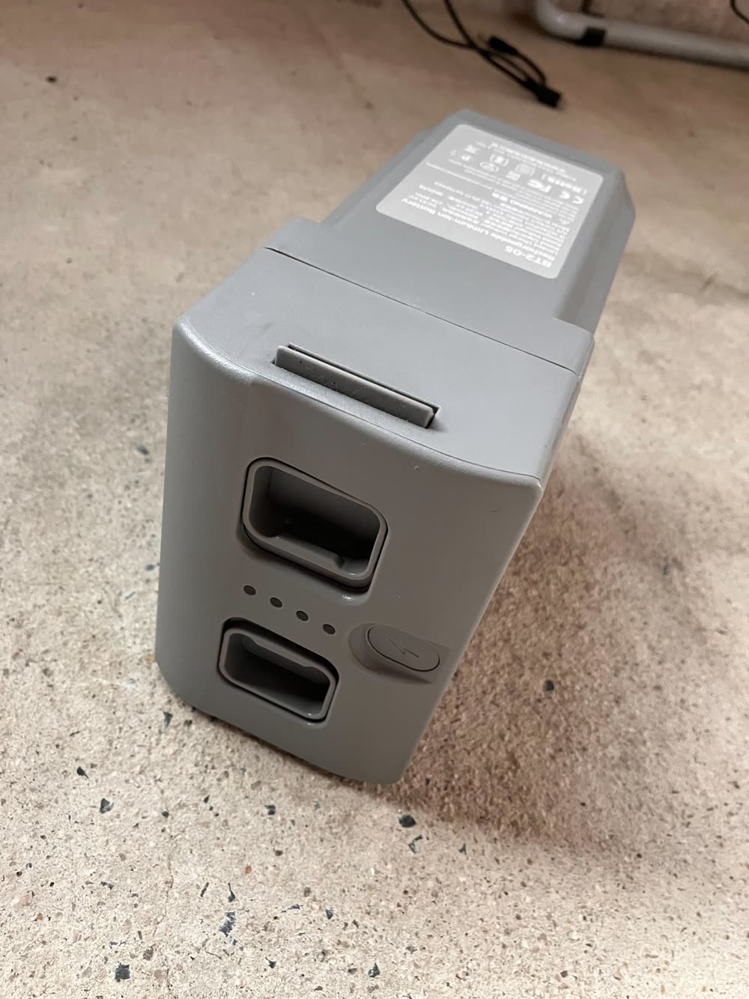
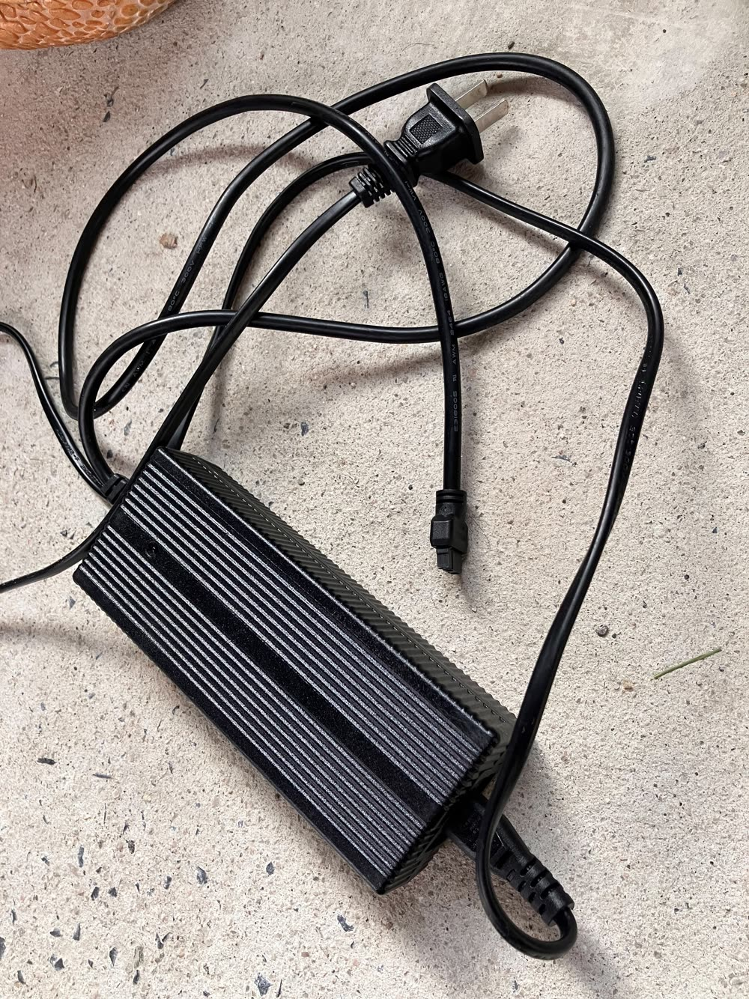
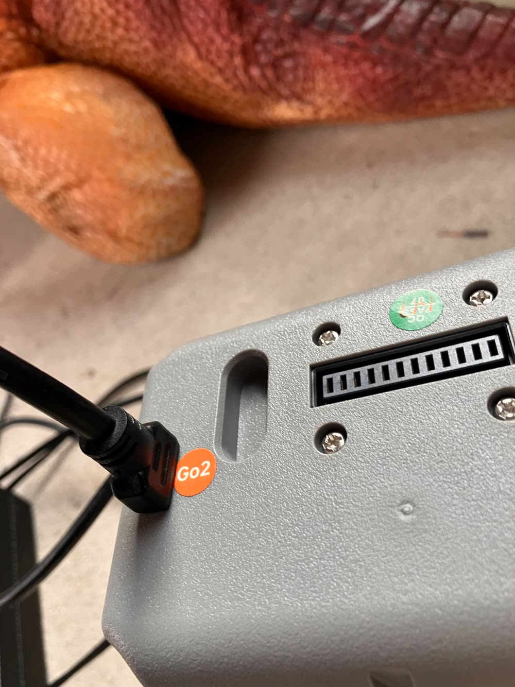
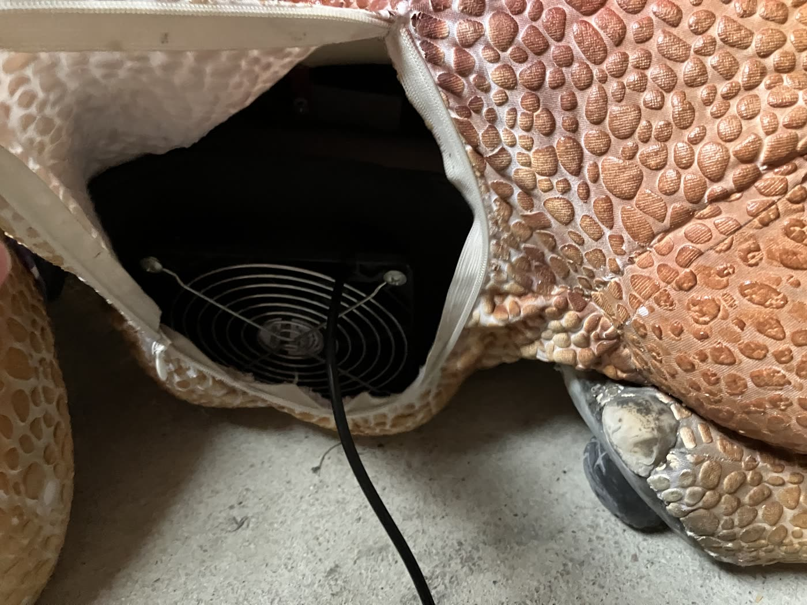
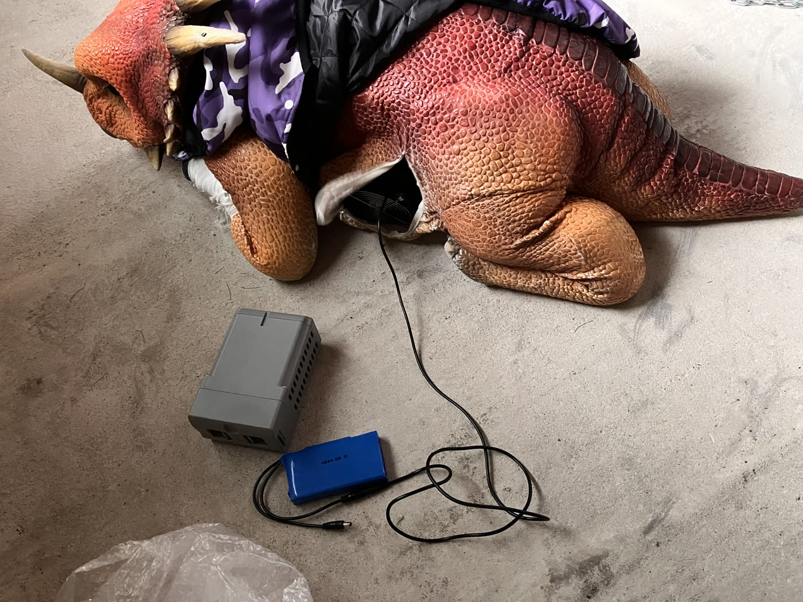

STEP 1
バッテリーを充電する
使う前に、バッテリーを充電器でしっかり充電しましょう。



💡 充電の方法
- バッテリーの差し込み口に充電器を挿す
- 充電器をコンセントにつなぐと充電が始まります
STEP 2
バッテリーの入れ方・外し方
バッテリーの差込口は、ラジコンのお腹のあたりにあります。
🔋 バッテリーを入れる
- 雷マークを上にして差し込む
🔋 バッテリーを外す
- 2つのツマミを内側に引き寄せて取り出す
STEP 3
電源の入れ方・切り方
電源のオン・オフは、どちらも同じ操作です。
💡 電源を入れる・切る
- 電源を入れるときも切るときも、2回のタップが必要です
- 2回目のタップは長押しです
STEP 4
電源を入れる前に、姿勢を整える
⚠ 注意：いちばん大切なポイント
電源を入れる前に、足を整えて伏せをしているような姿勢にしてください。少しでも足が曲がっていると、うまく立ち上がれずに転んでしまい、その後に操作しても動きません。
立ち上がり：失敗と成功
STEP 5
お休み中は、ファンで内部を冷却
このラジコンは内部に熱がこもり、10〜15分ほどでオーバーヒートします。オーバーヒートすると伏せの姿勢に戻り、動かなくなります。


🌀 冷却の手順
- いったんテントに戻す
- バッテリーを外す
- 同梱のファンをお腹の中にあてて冷やす
※冷却が早まり、次の立ち上がりも早くなります。
⏱ 稼働の目安 （1時間あたり）
▶ 稼働10〜15分
♨ 休憩・冷却45分
くり返し↻